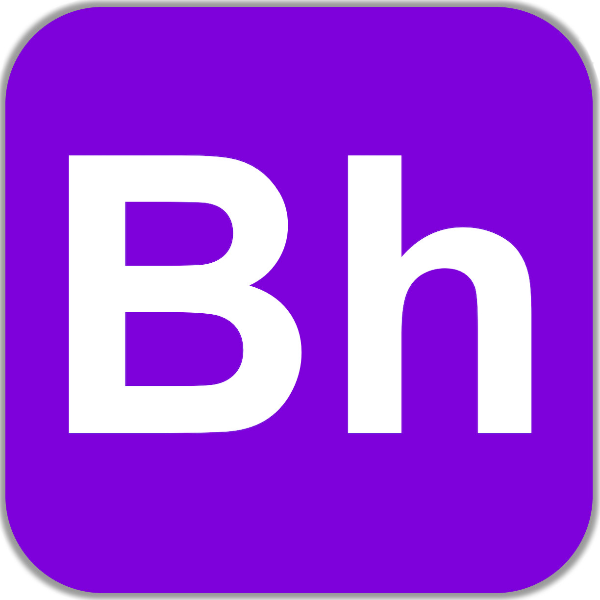

Mobile Molecule Visualizer

Structures of chemicals provide great information on the properties of the chemicals. Therefore, the visualization of the molecules, both simple and complex, is one of the most important tools in studying chemistry. Having a free mobile molecular visualization application accessible to many chemists worldwide is important for the chemistry/biology communities. Focusing on modern and simple user-friendly interfaces, this work can help not only the professional chemist and chemistry-related researchers, but also students who are interested in chemistry and biology.
Chemreps
With more machine learning appearing in computational chemistry, we are making an open source python library for creating molecular representations. Currently Chemreps contains basic molecular coordinate parsers and machine learning representations that we have coded from literature. More will be available soon.